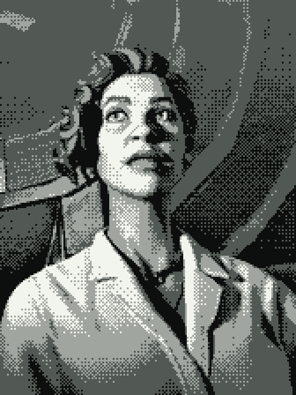
Dr. Flores
Lead Marine Researcher
Establishing uplink 0%
Expedition Portal
Welcome to Thallas Corp. Aquarius Research Base, a state-of-the-art deep-sea research facility. You’ll be using the latest in wearable AR technology - SPECS - to embark on your mission. Please review the expedition materials before transiting to base.
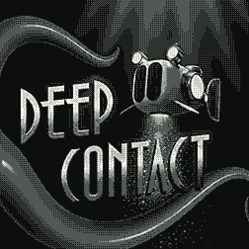
A modern Atlantis
The state-of-the-art underwater research facility hosts interdisciplinary scientists, like you, to study the wonders of our ocean.
Submersible: Unmanned Underwater Surveying Vehicle
Octopus

Lead Marine Researcher
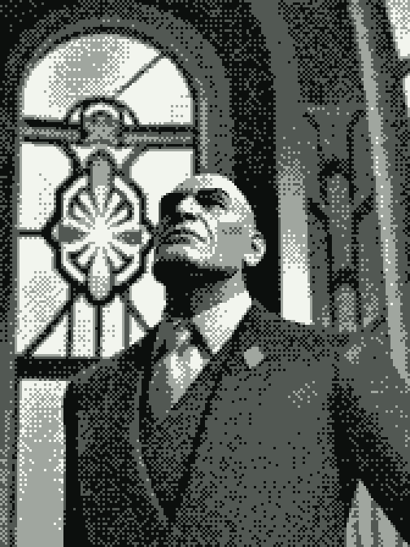
CEO, Thallas Corp.
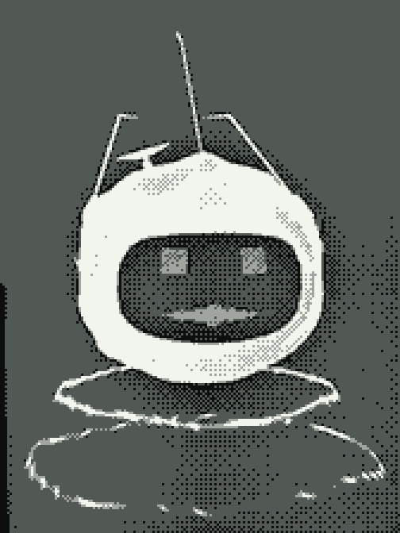
The robot
Registration Pending
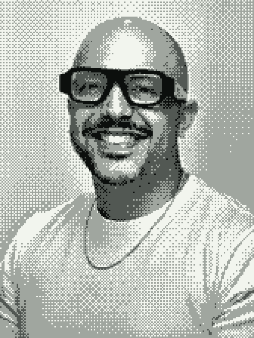
Lead Developer
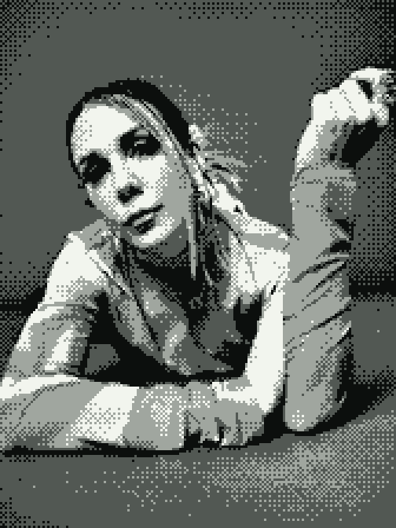
Music
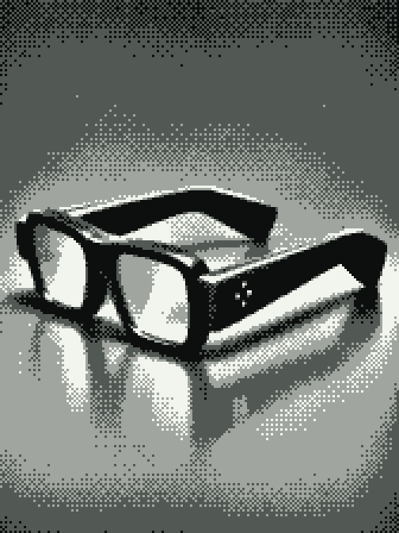
Underwriting partner
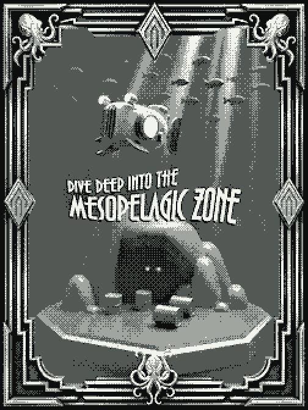
Scientists pilot a remotely operated sub (ROV) across the seafloor here, searching for tool fragments thought to have been made by an intelligent species of octopus.
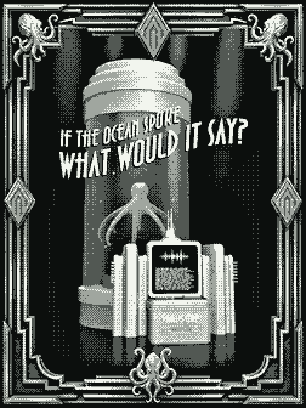
Ongoing research suggests that symbols found throughout nearshore environments and caves are part of a visual language for a specific species of octopus. Scientists are working to decode their meaning.

Researchers here tag marine animals with Thallas sensors whose pings show their movements, feeding and social behaviour, and they now aim to tag the octopus itself.
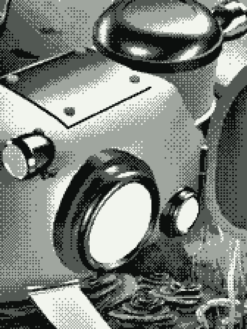
A ring of underwater microphones along the hull sends out sonar pulses and listens for their echoes, mapping the seafloor in real time while Thallas AI picks out animal calls from the background noise of the deep.
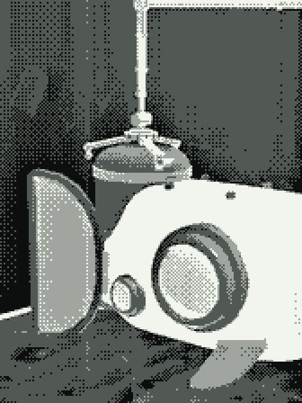
The submersible picks out a single point of interest on the seafloor and collects only what scientists need from it, then seals each sample away so it reaches the lab undisturbed.
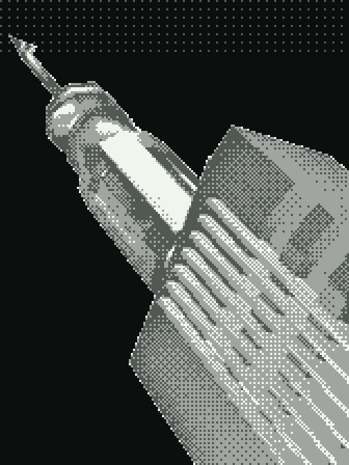
Each dart carries a small biotag that clings to the creature’s skin and reports its position live to the research base, recording every movement, feeding stop and social encounter.
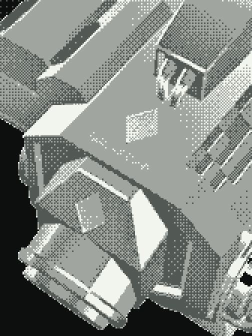
A cartridge of compressed gas powers the shot, and pulling back the handle loads the chamber with more pressure, so the gas can drive the dart through the water without hurting the creature.
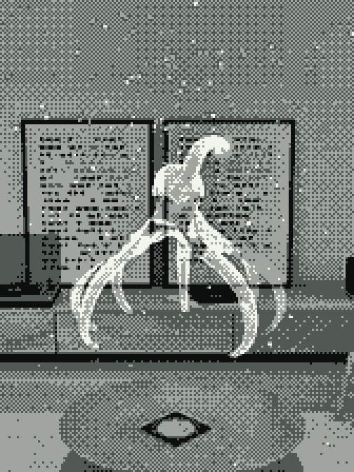
Thousands of tiny pigment sacs in the skin stretch and shrink in a fraction of a second, letting the octopus blend into its surroundings. Our research suggests these shifting patterns may also be a form of language.
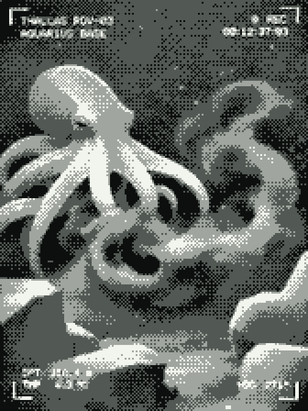
Octopuses are known to release clouds of ink to escape predators. This one shapes its ink into deliberate forms and visual symbols, a behavior never recorded before that may be a way of communicating.
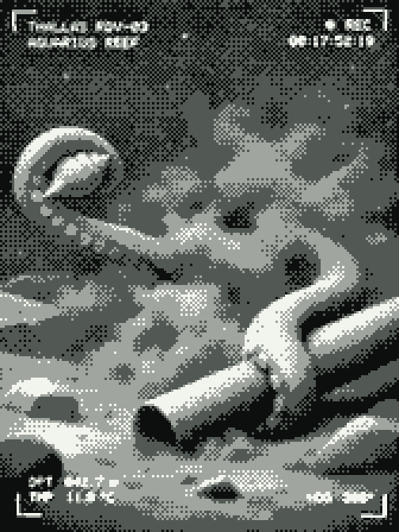
About two-thirds of an octopus’s neurons sit in its arms rather than its brain, so each arm can touch, taste and make decisions on its own. In effect, the creature thinks with its whole body.
Lead Marine Researcher.
A world-renowned marine scientist and conservationist, Dr. Flores has spent months in Aquarius Research Base studying social interactions among octopuses. Now a recluse, little is known about the work she is conducting on base.
CEO, Thallas Corp.
The founder and CEO of Thallas Corp., a global leader in AI systems, built Aquarius Research Base as a modern-day Atlantis to invest in marine scientific discovery and conservation.
Quark is a Thallas Corp. assistance drone designated for use within Aquarius Research Base. It facilitates training, assists scientists on key missions, and has advanced human and non-human translation capabilities.
Dr. Danny Pimentel is an Associate Professor and Director of the University of Oregon’s Reality Lab in Portland, Oregon. He is also a Visiting Professor at OceanX, Ambassador at Specs, and serves on the Science & Technology Advisory Council at The Hydrous.
Sirintip (Sirintip Phasuk) is a New York-based Swedish-Thai singer, composer, producer, and interdisciplinary research artist whose work blends jazz, avant-pop, electronic, Thai traditional, and classical music. Born in Bangkok, Thailand and raised in Sweden, her music and performances frequently explore themes of climate science, nature, identity, empathy, and sustainability.
Deep Contact was made with the support of SPECS.